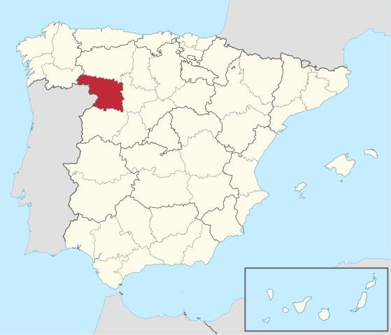

La provincia de Zamora
Zamora es una provincia española del noroeste de la comunidad autónoma de Castilla y León. Sus temperaturas medias anuales de la provincia de Zamora son relativamente bajas, oscilando entre los 8 °C de Sanabria y los 12,5 °C del entorno de Zamora, la capital provincial. Las precipitaciones son en general escasas en toda la provincia con valores normalmente inferiores a 400 mm/año, solo Sanabria se escapa a esta tendencia seca, llegando a valores de hasta 1400 mm/año, buena parte de ellos en forma de nieve. Así cuanto más al norte y oeste nos encontremos las temperaturas serán más bajas y la pluviosidad mayor.
Bandera
La bandera de la provincia de Zamora, conocida como la Seña Bermeja, y que también lo es de la ciudad de Zamora, se compone de ocho tiras rojas que representan las ocho victorias obtenidas por Viriato sobre diversos pretores y cónsules romanos, y una banda verde esmeralda; banda que Fernando V de Castilla colgaba sobre su hombro y que colocó coronando la Seña Bermeja, en recompensa y reconocimiento de los auxilios prestados en la batalla de Toro, que tuvo lugar en la vega de Toro, cerca de Peleagonzalo, en marzo de 1476.